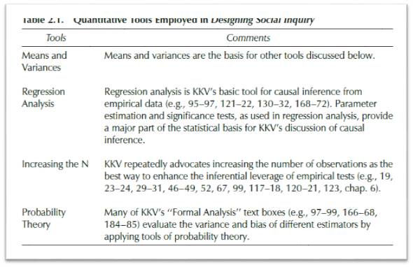
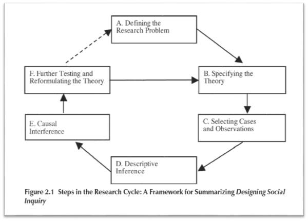
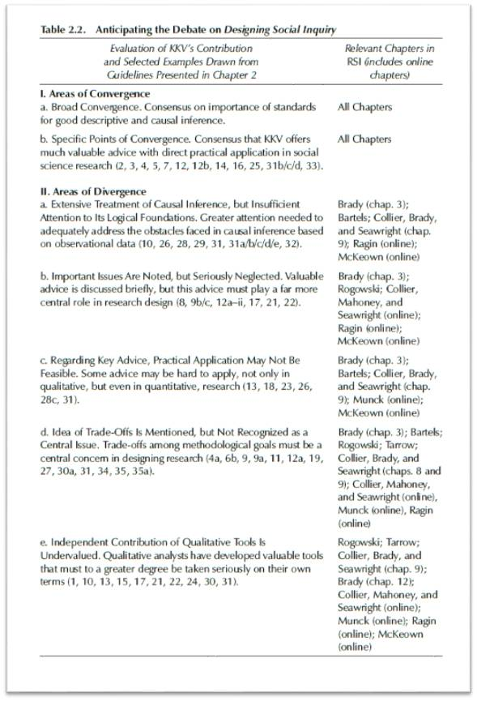

收录于合集
文献来源 :
David Collier, Jason Seawright, and Gerardo Munck. “The Quest for Standards: King, Keohane, and Verba’s Designing Social Inquiry.”, in Henry E.Brady, David Collier. Rethinking Social Inquiry. Rethinking social inquiry :. Rowman & Littlefield, 2010, pp. 33-63.
** **
** ** 作者简介：****
David Collier: 美国加州大学伯克利分校政治学系教授，美国艺术与科学院院士，研究方向为比较政治、拉美政治和方法论。（拉美政治、历史关节点与方法论研究：大卫·科利尔的学术人生）Jason Seawright：美国西北大学政治学系助理教授，研究方向为政治心理、政治行为、拉美政治与多元方法。Gerardo Munck，美国南加州大学国际关系学院教授，研究方向为比较政治、拉美政治和测量方法。
** ** ** ******
编者按：
《社会科学的研究设计》（KKV）是当代社会科学方法论“大一统”的首次尝试，也是许多研究生系统学习社会科学研究设计的第一本书。毫不夸张的说，它直接影响了整整一代人对社会科学的认知。然而，如果以今天的眼光重新审视KKV，不难发现它既算不得完美，也称不上友善。尤其是KKV套用定量研究的思维，粗暴地肢解了定性研究的传统，招致了定性阵营的激烈反弹。在这种背景下，David Collier等人针锋相对地出版了《重思研究设计》，对KKV提出了有力的挑战。今天，政文观止就为读者选编《重思研究设计》的部分章节，期盼帮助读者更好地认识社会科学研究。
**
**
回顾 KKV ：科学、推断与前提
在作者看来，KKV的贡献主要有三个方面：科学研究的标准、推断的概念与种类以及因果推断的前提假设。
首先，KKV明确，社会科学严格地归属于科学。作为一种科学，社会科学的核心任务就是作出推断，即从已知的数据中推断出未被观察到的信息。因此，推断也就成为了KKV全书的核心词汇。从科学的标准，社会科学研究必须将研究过程公开化，样本选择、数据收集和分析论证都不例外。唯有这样，学术共同体才能对此研究做出公允评判。与此同时，社会科学研究者必须坦然面对自己结论的不确定性和不完整性。世上既没有包容一切的理论，也没有完全准确的测量。此外，研究方法的可信度直接决定了研究结果的质量。研究者本身是否知名，研究结果与既有文献是否相符等问题则不在科学评判的标准内。
其次，KKV详细介绍了推断的含义、种类与方法。KKV认为，无论是描述的还是因果的，定性的还是定量的，推断都是社会科学的核心任务。描述性统计包括三个部分：用样本推断总体、从事实抽象出概念以及区分系统与非系统的效应。KKV认为，描述是社会科学的基石。很多时候，因果推断是极其困难的，而“好的描述”比“坏的解释”要强得多。KKV对因果推断的认知建立在反事实思维之上。对于同一个对象而言，“处理”和“控制”这两种情况存在于平行时空中而不可能同时出现，研究者就无法直接观察和对比这两种情况，这也成为了因果推断的最大悖论。在实际操作中，研究者只能在不同的对象上模拟“处理”与“控制”。在推断的方法层面，KKV主要还是依赖定量的思维与工具（详见下表）。KKV的终极目标是告诉读者如何进行有效的描述和推断，在这一过程。此外，KKV还反复强调了“避免偏差”和“提高显著性”这两个基本目标。

最后，KKV还探讨了因果推断的前提假设，作者将其概括为因果同质性、观测值独立和有条件独立。因果同质性指的是所有的观测单位都具有相同的因果机制，即自变量的某一变化总能对因变量产生相同的效应，而这一效应又适用于所有个案。观测值独立指的是某一样本在某一变量上的取值不受其他样本的影响，即新的样本能呈现新的信息，从而增加推断所需要的样本方差。有条件独立指的是结果与赋值之间的独立性，即自变量的取值不能被因变量左右。这种独立性可以帮助研究者避免内生性和虚假相关。
**
**
重构 KKV ：科学研究的流程
在简单回顾了KKV的主要贡献后，作者散见于KKV全书各个部分的建议统一起来，构建了科学研究的流程图。

如图所示，科学研究的 第一步是明确研究问题。 这个问题应该具有一定的现实意义和学术贡献，而且一定是能通过研究来推断的。 第二步，提出具体理论。 研究者建构的理论必须是可被证伪的，并且要足够清晰。同时，理论应该是逻辑自洽，而且尽可能穷尽自己的解释力。 第三步，选择样本与观测值。 要明确样本与观测值之间的区别，尽可能选择变量确实存在变化的样本并保证样本数量及其同质性、独立性满足要求。此外，小样本研究中的案例一般不能随机获取，需要精心挑选。 第四步，描述性推断。 必须牢记，好的描述也需要推断，而不能止步于类型学。研究者需要从看似独特的案例中抽象出一般化的性质，同时要关注案例所处的情境和现实世界的复杂性，尽可能区分系统效应和非系统效应。 第五步，因果推断。 必须承认，因果关系并不能被直接观察，因此需要研究者在数据和假设的基础上进行推断。研究者应当将因果关系所需的前提假设呈现在研究设计中，从而保证因果推断的有效性。此外，研究者应当根据既有理论和实际情况谨慎对待变量，不可滥用“数据挖掘”，也不能遗漏相关变量。同时，研究者应当时刻警惕多重共线性、内生性等问题。 最后，进一步检验和修正理论。 带着这一步的结果，研究者将开启下一轮研究循环。
**
**
反思 KKV ：知易行难的研究设计
作者认为，KKV在社会科学研究的某些方面推动了共识，但也引发了更多的争议。在KKV的反复强调中，因果推断的目标已经深入人心，而KKV的某些具体建议在今天仍然十分有用。
随后，作者重点梳理了KKV的不足之处。

首先，KKV反复强调因果推断，却没有深究其逻辑基础。KKV并没有告诉研究者到底如何挑选合适变量并排除无关变量，而定量方法并不能很好地处理这些问题。其次，KKV对于很多重要问题的探讨太过简单。小样本问题、无变量设计、研究情景等议题在KKV中有所体现，但没有得到应有的关注。第三，KKV给出的某些建议并不实用。譬如KKV提醒研究者注意因果推断中的测量误差，然而以目前的技术来看，测量误差对研究结果的影响是很难判定的（哪怕是在定量研究中）。类似的，KKV建议研究者避免内生性，但很多时候我们确实对内生性束手无策。第四，KKV没有明确研究设计的权衡问题。研究设计的很多要求是无法很好地共存的，譬如片面要求因变量出现变化就会妨碍我们对正面案例的详细研究，而这种研究本身是非常有价值的。最后，KKV忽视了定性方法对社会科学研究的独立贡献。
编后记：
从第三部分不难看出，本文预示了随后章节对KKV的全面反思与批判。这些批判基本上是客观而公允的，《重思研究设计》也同KKV一样成为了社会科学方法论的必读书目。然而，小编认为，正如不存在完美的研究设计一样，世界上也不存在完美的方法论教材。我们学习和思考方法论并不是为了证明谁的理论更伟大，而是渴望用他人的经验来改进自己的研究。因此，小编期盼各位读者不要沉溺于方法论的辩论（尤其是不要纠结于定性与定量之争），而是从自己的研究目的出发，选择合适的研究方法，扎扎实实地为社会科学做出贡献。
推荐阅读：
-
King G, Keohane R O,Verba S. Designing social inquiry: Scientific inference in qualitativeresearch[M]. Princeton university press, 1994.
-
Rethinking socialinquiry: Diverse tools, shared standards[M]. Rowman & Littlefield Publishers, 2010.
-
Goertz G, Mahoney J. A tale of two cultures: Qualitative and quantitative research in the social sciences[M]. Princeton University Press, 2012.
-
Sirkin R M. Statisticsfor the social sciences[M]. Sage Publications, 2005.
-
伍德里奇. 计量经济学导论: 现代观点[M]. 清华大学出版社, 2014.
-
孙嘉明. 政治学研究中的定量分析方法[J]. 政治学研究, 1986(6):17-21.
-
唐世平. 超越定性与定量之争[J]. 公共行政评论, 2015(4):45-62.
-
盛智明. 超越定量与定性研究法之争-KKV对定性研究设计的启发[J]. 公共行政评论, 2015(4):4-16.曲博. 因果机制与过程追踪法[J]. 世界经济与政治, 2010 (4): 97-108.
-
李珍. 反事实与因果机制[J]. 自然辩证法研究, 2009(9):33-38.
-
庞珣. 国际关系研究的定量方法:定义、规则与操作[J]. 世界经济与政治, 2014(01):5-25.
**
**